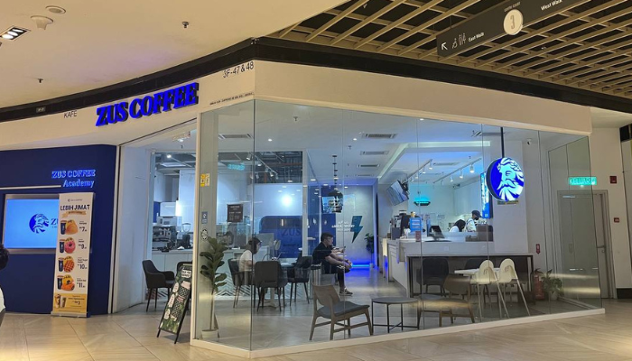
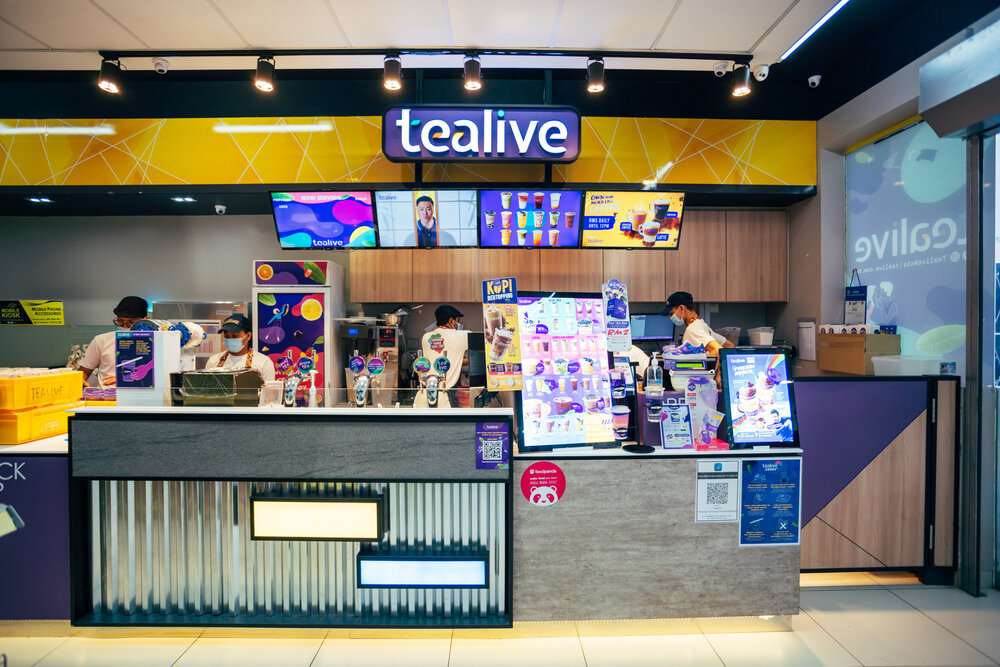
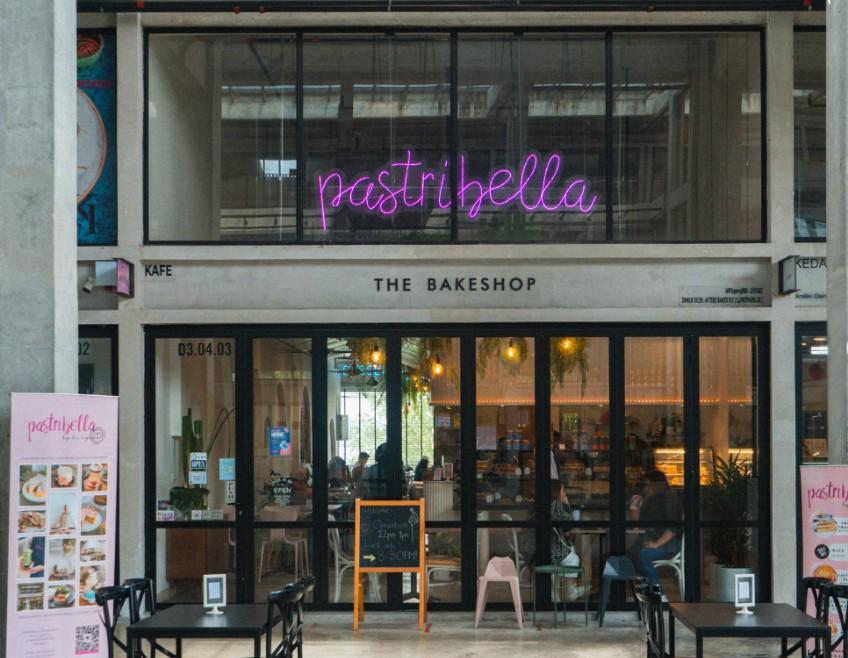

Duration: Waiting period after SPM (High School) results, prior to starting Diploma studies.
Working at ZUS Coffe taught me how a high-volume, modern coffee chain operates. I learned how to prepare ZUS' signature beverages, manage mobile app orders, and handle peak hours efficiently. The role required strong teamwork, fast service, and accuracy in fulfilling custom orders.
Location: Zus Coffee, IOI Putrajaya (Click to view map)
Challenges Faced

Duration: Semester break 1st semester.
During my first semester break, I worked at Tealive. focusing on food and beverage preparation. This role was fast-paced and required precision and attention to detail to ensure every drink was prepared according to strict recipes. I was responsible for customer service, order taking, drink preparation, and maintaining hygiene standards.
Location: Ayer8 Putrajaya (Click to view map)
Challenges Faced

Duration: Semester break 3rd semester.
My experience at Pastribella allowed me to explore a more artisanal cafe environment. I learned how handcrafted pastries and beverages are prepared daily and how a small, cozy cafe maintains its quality and customer satisfaction. I was responsible for preparing drinks, assisting with pastry arrangements, and engaging closely with customers to understand their preferences.
Location: Pastribella, Cyberjaya (Click to view map)
Challenges Faced